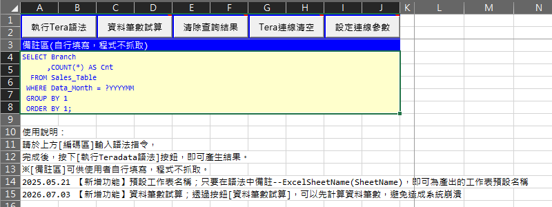
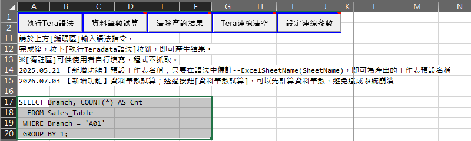
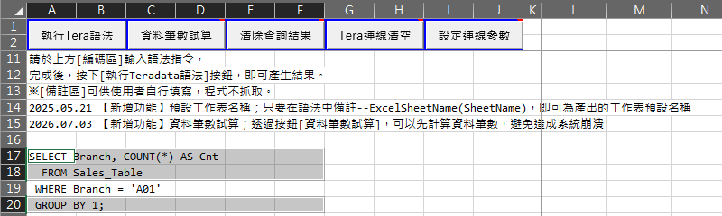

用 Excel VBA 執行 Teradata SQL：查詢結果直接放進工作表
從 Teradata 撈資料做報表，常見的做法是在查詢工具跑完、複製結果、貼到 Excel、再整理格式，每個月重來一次。CJP 增益集 (CJPsAddin，免費的 Excel VBA Add-in) 的SQL環境建立 → For Teradata，會在活頁簿裡建一張「Teradata操作區」：在儲存格寫 SQL，按一下按鈕，結果直接放進工作表，並自動補上序號、篩選與凍結窗格。SQL 跟著活頁簿存起來，下個月換個參數就能重跑。
適合這些時候用
- 每個月固定要撈的報表：SQL 存在 Excel 裡，換個月份參數就能重跑
- 一次跑好幾段查詢，每段的結果各放一張工作表
- 先用暫存表 (Volatile Table) 整理中間結果，再分幾段查詢
- 不確定會撈出多少筆，想先算筆數再決定要不要真的撈
- 把文字檔裡的資料，逐筆 INSERT 進資料表
需要先安裝 Teradata 的 ODBC 驅動程式，並有可以登入的帳號。
用 CJP 增益集：開始使用
- 開一個活頁簿並存檔。沒存過檔、或是用唯讀開啟時，程式會先請你存檔
- 在增益集選單「常用功能一」點SQL環境建立… → For Teradata，會新增一張「Teradata操作區」工作表
- 第一次使用：按「設定連線參數」→「設定連線資訊」，輸入驅動程式名稱、伺服器、預設資料庫；帳號密碼在第一次執行時會請你輸入
- 在黃色的編碼區寫 SQL，選取後按「執行Tera語法」
驅動程式名稱可以在 Windows 的「ODBC 資料來源管理員」查到；伺服器與資料庫名稱請問公司的資料庫管理員。連線資訊與帳號密碼記在這台電腦的使用者資料夾，下次不用再輸入。



SQL 寫在哪裡都可以：選到哪裡就跑哪裡
執行的是目前選取的儲存格，所以 SQL 不一定要寫在編碼區：
- 寫在編碼區：整段貼進去，選取編碼區後執行。建好操作區時，游標已經停在編碼區
- 寫在儲存格：一行寫一列，選取這幾列後執行。同一張表可以放好幾段 SQL，選哪段就跑哪段
- 跳列選取：按住 Ctrl 跳著選，沒選到的那一行 (例如某個篩選條件) 暫時不跑，不用刪掉再補回來
選取的範圍裡有空白儲存格時，會自動略過。
操作區的五個按鈕
| 按鈕 | 做什麼 |
|---|---|
| 執行Tera語法 | 執行選取的 SQL，結果放進工作表 |
| 資料筆數試算 | 先算出會撈出幾筆，不把資料撈回來 |
| 清除查詢結果 | 清掉這張操作區右邊的查詢結果 |
| Tera連線清空 | 重新連線。連線怪怪的時候試試看；暫存表會跟著消失 |
| 設定連線參數 | 顯示目前的連線資訊與帳號，可以「設定連線資訊」「設定帳號密碼」，或「密碼重設」(直接改 Teradata 上的密碼) |
進階用法
執行 SQL
- 用分號
;分段，一次跑好幾段，每段的結果各放一張工作表 (字串、註解裡的分號不算) - 在那一段寫註解
--ExcelSheetName(本月明細)，工作表就叫「本月明細」 - 參數
?YYYYMM：執行時詢問要填的值，預設上個月底 (10 月執行時是 202609)，同一個參數只問一次 - 「資料筆數試算」只回傳筆數，不把資料撈回來
- 從網頁複製來的 SQL，看不見的空白 (NBSP) 會先清掉
看結果
- 第一欄自動補上序號
SN，加上篩選、調整欄寬 - 第一格的註解記下執行時間、參數與 SQL，日後還知道資料怎麼撈的
SAMPLE 1自動轉成「欄名｜值」兩欄，由上往下看SHOW VIEW、SHOW TABLE一行放一格，加上行號
連線與密碼
- 連線保留到 Excel 關閉，暫存表下次執行還在
- 隔天第一次執行、或連線被中斷時，自動重新連線
- 密碼設定超過 80 天會提醒，可以直接在 Excel 改
寫入資料
INSERT INTO 表名 VALUES (?, ?, ?);搭配 Tab 分隔的文字檔，每一列 INSERT 一次- 先檢查問號數量和欄數是否一致、每一列的欄數是否相同
- 中途失敗時，會告訴你已經匯入幾筆
要記住的 4 件事
- 活頁簿要先存檔，而且不能是唯讀；否則程式會先請你存檔
- 執行的是選取的儲存格，按按鈕前先確認選取範圍
- 只有一段 SQL 時，結果放在操作區的 L 欄以後，每次執行會先整欄清掉上一次的結果；L 欄以後不要放其他資料
- 參數名稱用英數字；「資料筆數試算」適合用在 SELECT，CREATE、INSERT 包起來會出錯
常見問題
需要安裝什麼？
Teradata 的 ODBC 驅動程式，以及可以登入的帳號。驅動程式名稱在 Windows 的「ODBC 資料來源管理員」查得到；伺服器與預設資料庫請問公司的資料庫管理員。
可以執行 INSERT、DELETE、CREATE 嗎？
可以，會用你的帳號權限執行，跑完會顯示做了什麼 (例如「插入資訊」「清除表格」)。會改到資料庫的語法，執行前請再確認一次。
密碼改過了，要怎麼更新？
按「設定連線參數」→「設定帳號密碼」，更新記在電腦上的那一組。要直接改 Teradata 上的密碼，按「密碼重設」。
要付費嗎？公司電腦可以裝嗎？
免費。安裝方式和注意事項請看安裝方式。